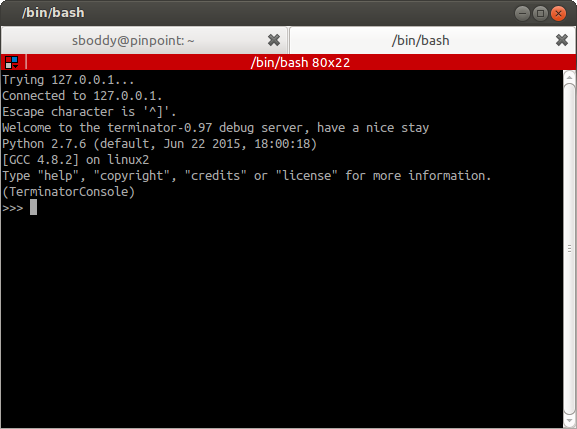

Advanced Usage¶
This is a grab-bag of topics that cover the bits you probably wouldn’t use in day-to-day activities.
Command line options¶
Various options can be passed to Terminator at startup time to change numerous aspects and behaviour.
The following option sub-sections can also be seen in the manual page for Terminator:
man terminator
Note
I’ve rearranged and grouped the options compared to how they
would appear using the -h option just to aid clarity.
General options¶
-h,--help- Show a help message and exit
-v,--version- Display program version
-g CONFIG,--config=CONFIG- Specify a config file
--new-tab- If Terminator is already running, just open a new tab
-p PROFILE,--profile=PROFILE- Use a different profile as the default
-u,--no-dbus- Disable DBus
Window options¶
-m,--maximise- Maximise the window
-f,--fullscreen- Make the window fill the screen
-b,--borderless- Disable window borders
-H,--hidden- Hide the window at startup
--geometry=GEOMETRY- Set the preferred size and position of the window(see X man page)
-T FORCEDTITLE,--title=FORCEDTITLE- Specify a title for the window
-i FORCEDICON,--icon=FORCEDICON- Set a custom icon for the window (by file or name)
Shell options¶
-e COMMAND,--command=COMMAND- Specify a command to execute inside the terminal
-x,--execute- Use the rest of the command line as a command to execute inside the terminal, and its arguments
--working-directory=DIR- Set the working directory
Layout options¶
-l LAYOUT,--layout=LAYOUT- Launch with the given layout
-s,--select-layout- Select a layout from a list
Custom Window Manager options¶
These settings are for people with heavy customisations to their window manager. Some window managers allow various rules to be applied, or actions to be taken, depending on how the window system perceives the window. These settings facilitate that.
-c CLASSNAME,--classname=CLASSNAME- Set a custom name (WM_CLASS) property on the window
-r ROLE,--role=ROLE- Set a custom WM_WINDOW_ROLE property on the window
Debugging options¶
See Debugging for more explanation of these options.
-d,--debug- Enable debugging information (twice for debug server)
--debug-classes=DEBUG_CLASSES- Comma separated list of classes to limit debugging to
--debug-methods=DEBUG_METHODS- Comma separated list of methods to limit debugging to
The Config file¶
The default configuration file file for Terminator is stored in the standard path for configuration files. It can be found at:
${HOME}/.config/terminator/config
It is human readable, and can be edited if you are are careful. This is not generally recommended though, and you are, of course, strongly advised to make a backup before making manual changes.
There are many more specific details in the manual page:
man terminator_config
Debugging¶
There is inbuilt debugging features in Terminator. The simplest is to
start Terminator from another terminal with the option -d. This
will dump many debug statements to the launch terminal.
Note
If the DBus is active in any other Terminator, then by
default your attempt to launch with debug will launch
a new window under the already running process. To prevent
this you can use the -u option which will disable the
DBus interaction for the debugged instance of Terminator.
There is a lot of output, and a great deal of it will typically not be related to the area you are looking into. There are two more options that can be passed that limit the amount of debug lines to classes or methods of interest. See Debugging options for the detail.

The final facility is to start a debug server by passing -dd (this
is the same as -d -d) which will start a debug server. With this
setting a fourth item, Open Debug Tab, also appears in the second
part of the The Context Menu, as highlighted in the image to the
right.
Selecting it will give the following new tab with dedicated debug terminal:
This prompt is a standard Python interactive prompt, but this is connected to the Terminator instance. You can explore the applications data structures, classes, etc. and can even call functions and methods.
Alternatively, instead of launching this tab, you could connect to the debug server from a different window. This requires that you search back through the debug output for the line containing “listening on”. Here you will see the port number, and you can simply use:
$ telnet localhost <port>
Warning
Whichever method you use the debug output is also dumped into this terminal, even though it is already there in the launching terminal. This can get rather annoying, and seems counter-productive to me, so a way to turn off the output in the debug console may be added. In the meantime you can use:
>>> from terminatorlib import util
... util.DEBUG=False
This should turn off the output, and let you explore the internal structure more easily.
Warning
Using the -dd option will make the DBus
interface problematic. Any attempt to use Remotinator
will hang the main application.
The debug options and their usage are detailed here.
DBus¶
DBus is a standardized form of IPC, or Inter-Process Communication. More detail about the internals of DBus can be found at the freedesktop.org for DBus.
In Terminator we currently use DBus for two tasks:
Only run one instance of Terminator
The first instance will create the server. The second instance will fail to create the server, so it will request the first instance to create a new window (or new tab with
--new-tab).Enable Remotinator
Running a single instance of Terminator will cause problems if you
are trying to launch a layout, when an instance is
already running, so when configuring a program, script or menu item
to launch a layout, you need to remember to include the -u option
that will disable the DBus for that instance. The Layout Launcher
does this for you, and as a result any launched layout is running
without DBus, and cannot be controlled with DBus.
Note
There is quite some scope for improving this. I have a vague notion of a single master server and multiple instance servers, to improve the interaction between DBus and layouts.
Remotinator¶
Remotinator is a minimal wrapper around making DBus calls, and is
typically run from within a Terminator terminal. This is not
strictly necessary, but if not you will have to do some extra work
to determine the valid UUID of a current terminal and pass it as the
TERMINATOR_UUID environment variable, or as the value to the
-u/--uuid option. Remotinator is called within Terminator
with:
$ remotinator <command>
or with one of the following:
$ remotinator --uuid <UUID> <command>
$ TERMINATOR_UUID=<UUID> remotinator <command>
$ export TERMINATOR_UUID=<UUID>; remotinator <command>
to force the UUID, or call it from outside Terminator.
The following commands are currently enabled:
| Command | Action |
|---|---|
| get_tab [1] | Get the UUID of a parent tab |
| get_tab_title [1] | Get the title of a parent tab |
| get_terminals | Get a list of all terminals |
| get_window [1] | Get the UUID of a parent window |
| get_window_title [1] | Get the title of a parent window |
| hsplit [1] | Split the current terminal horizontally |
| new_tab [1] | Open a new tab |
| new_window | Open a new window |
| vsplit [1] | Split the current terminal vertically |
| [1] | (1, 2, 3, 4, 5, 6, 7) These entries require either TERMINATOR_UUID environment var, or the –uuid option must be used. |
Calling Remotinator without a command or with the -h will print
the options and available commands to the terminal.
Note
Because a layout (unless launched from the command line as
as the first instance) is normally launched as a separate
instance requiring the -u, Remotinator will not work
within layouts. As mentioned in the DBus section,
this has the potential to be improved upon.
There is a lot of scope for expanding this feature, and it is relatively simple to do, so is an ideal task for dipping ones toes.